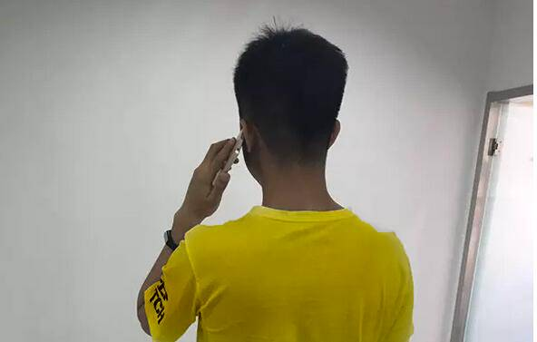
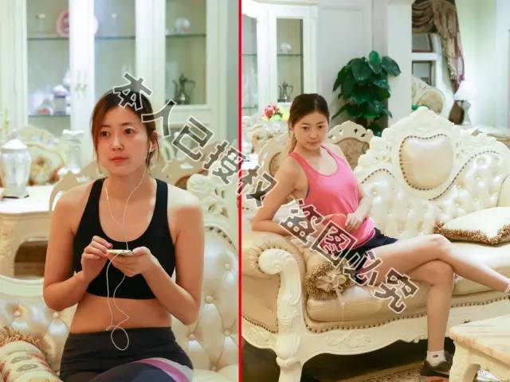

【推荐】 老公爆料：一天一次，狂减30斤，快看，以免删除
原本胖胖的媳妇，突然毫无征兆的狂瘦不止，这让老公心生恐慌，生怕媳妇得了什么病，硬拉着她到医院检查，结果检查费花掉1200，身体没查出什么毛病，却意外发现媳妇一个“不可告人”的秘密。这是刚刚发生在天津和平区一对夫妻身上的事。

据这位心疼媳妇的老公刘先生说：“本来又胖又壮的媳妇，突然瘦的跟面条似的，我能不害怕吗？我们结婚时，她就挺胖，130斤，生完孩子之后，更胖了，158斤。老嚷着要减肥，结果吃减肥品吃的，跑肚拉稀的，有一回突然心跳加速，还打了120。打那以后，我坚决不让她乱减肥了，我说我又不嫌弃你胖，没了健康，再苗条有啥用？”
刘先生妻子变瘦之前
“可就在二个月前，我突然发现我媳妇好像瘦了，之后就一天瘦一圈，控制不住的瘦，都100斤以下了，尖下巴也出来了，那小腿细的，跟竹竿似的。我从来没见她这么瘦过，就害怕了。
无缘无故瘦这样，不会得什么病吧。我就赶紧拉她去医院检查，等到常规检查都做完了，各项指标都很正常。完了我还是担心，就让她做核磁看看，900多块钱，结果我刚要交钱，这败家媳妇终于忍不住了，跟我说实话了，让我别瞎花钱了，说她这么瘦，是因为用了这个方案！”

此时妻子急剧变瘦
“起初我还纳闷儿，我问我媳妇，怎么做到的呀？我怎么没看见你跑步健身呀？结果我媳妇告诉我，这个方案每天只要半小时就行，我每天早晚花一点时间就行了，你说气人不？早告诉我何必花掉一千多块呀！”
这时刘先生媳妇开口了：“我是通过微信了解到的这个，才用了不到二个月，就瘦成这样了。我也没想到会瘦这么快，也害怕有啥副作用，所以才跟着去检查了，花一千多块钱，买个心里踏实，值了！”
长按识别下方二维码
天津的小宁说，她用了这个方法当天，竟排出至少2斤“巨便”，还不腹泻，排完小肚子塌一半，又软又舒服。上秤一量，体重当时掉了二斤半。她自己是又惊又怕，不明白肠道里怎么会有这么多脏东西？赶紧通过微信咨询导师。导师告诉她，她排出的都是身体积存的宿便、毒素和油脂垃圾，保证她变瘦变漂亮。
从那以后，小宁几乎一天瘦一圈，一斤，一斤半，2斤，体重天天都在掉，原本像山一样高耸的大肚腩平了，腿细了，腰形出来了……坚持短短38天，整整瘦掉26斤，原本干燥的皮肤也变得水润润的。

厦门的莉莉，原来体重168斤，用完它2个月，不仅瘦掉40斤，脸上的2片黄斑竟然也消失不见！

哈尔滨的兰姐，从126斤瘦到98斤，体检时做彩超发现，乳房结节竟都不见了！

长按识别下方二维码
“神奇”揭竿而起
反对一切“泻、乏、晕”……等“自残式减肥”
节食伤身，腹泻脱水，吃药损肝肾，直接排油破坏代谢平衡……
据悉，研发之初，宗旨就是：拒绝一切速效却伤身的成分，要瘦，要健康，要更健康！吃，如吃海参，对身体有益无害，吃，能瘦身，再吃，容颜嫩，长吃还能和气活血，提高免疫，越吃越年轻。

目前全国众多肥胖人士，热衷于这个减肥方法，平均2天开始减重，30天平均减重45.8斤，腰围平均缩减5-12公分，且无一例不良反应者。 使用方法最多的是生完小孩刚断奶的女性，用了这个方法，瘦的特别快，有的人不到一个月就把怀孕长的肉都减掉了。还有些嘴馋不爱运动的馋人、懒人，一个月也 可以减掉20斤左右。有些爱美的小姑娘，本身不太胖，也想瘦个五斤八斤的，更是轻轻松松就瘦下来了。
长按识别下方二维码
大牌出动，是不是有点用杀牛刀宰鸡的感觉?
看来，今年胖子们的肥肉是保不住了!!
哈尔滨平房区小胖妞果果，减肥前154斤，精通日语和法语，可就因为太胖，工作屡屡受挫，一次恋爱也没谈过。关于以往的减肥历程，果果用4个字总结：痛 苦，心酸！节食、运动、减肥药……五花八门的减肥法，承受着拉肚子、头晕乏力的痛苦，结果换来的却是更疯狂的反弹。
最后，还是跟果果关系特别好的健身教练，给了果果微信号，推荐果果尝试这个方法。果果万万没想到，这么简单的方法竟然比她经历的魔鬼减肥训练还管用。天天 都变瘦，最多的时候一天瘦了2斤8两，关键脸上粗大的毛孔也没了，皮肤变得又白又细，乐得小姑娘直蹦高。最近她已经接到了3家外企的面试通知。
家住汕头的美娟，体重最重时是162斤，用了一个月，瘦掉58斤，大肚腩瞬间瘪了下去，腰形出来了，形象指数窜上一大截！消灭大肚子，“它”绝对专业哟！

石家庄的茵茵，用了半个月，半个月，减掉19斤，瞬间有了女神范儿！